The Process
As cottagers, our users may not have access to desktop computers which meant we needed software that would work well on tablets and mobile. We needed something that would be easy to modify for smaller screens and required minimal coding. We needed to be able to teach and provide information but not make it overly GIS focused or technically difficult as our users would likely not have this training. This was our process to produce a final web product.
Data Acquisition and Software Selection
In 2013 the Ontario Ministry of Natural Resources and Forestry (OMNRF, previously OMNR) reclassified and inventoried the shoreline at Lake Simcoe. The data, along with a methodology report was published in 2015. The data and report were provided to us by Silvia Strobl (Regional Operations Division, OMNRF). The shoreline inventory data consisted of four feature classes: Shoreline, Shoreline Structures, Near-Shore Features, and Outfalls.
We decided to explore ESRI software for this solution as ESRI has a number of community engagement and narrative applications. These feature classes were uploaded in a geodatabase to ArcGIS Online and shared as a hosted feature layer. The hosted feature layer was then opened in Map Viewer Beta and the first iteration of a web map was developed.
ESRI Exploration and Rapid Builds
To assess the most appropriate means of communicating the necessary information to solve our problem, we explored WebApp Builder, Dashboards, StoryMaps, and Experience Builder. As our users were not the GIS community, having something completely data driven was not appropriate for our solution, thus Dashboards was eliminated. While we wanted a guide experience to help teach the public about shoreline alterations, we wanted to maintain some freedom for users to explore data as they desired, thus we eliminated StoryMaps. WebApp Builder was also eliminated as it did not have the narrative capabilities we were looking for. While exploring the various applications, Sarah tried Experience Builder and used a pre-made template to explore the available functionality. Having shared her findings with the group, Experience Builder was chosen as it combined the narrative aspect of Story Maps and the map-focused aspect of WebApp Builder. Another desirable aspect of Experience Builder was that it was easy to manipulate the Experience for tablet and mobile.
Using the initial webmap created for our application exploration, we each produced a rapid build Experience. Apart from the initial trial run performed by Sarah during the various application investigations, no conferring took place until we met to share our creations. [Right-click to view each image to view in full screen.]
Journey Template
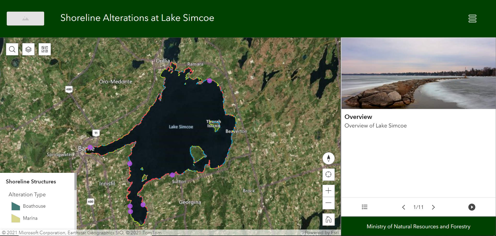 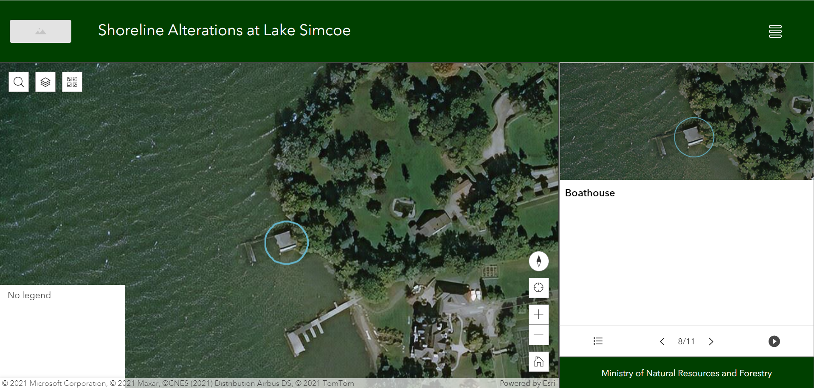Sarah chose to use a template for her rapid build. She selected Journey which uses the bookmark widget and a map to provide an interactive tour experience. The idea was to show an overview of Lake Simcoe and outline the project and its importance. The user would then be taken on a tour of classifications identified in the study. The bookmark could be timed to automatically take the user on the tour and the last bookmark would explain to the user how to use the map to find their own properties and explore the area, having learned about the different shoreline features.
Custom Journey Template
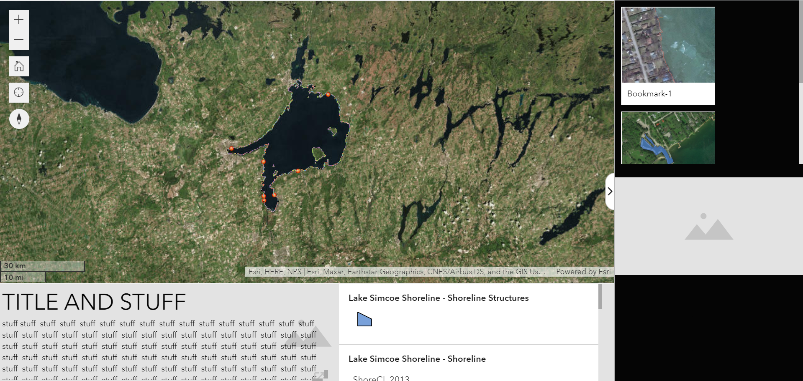 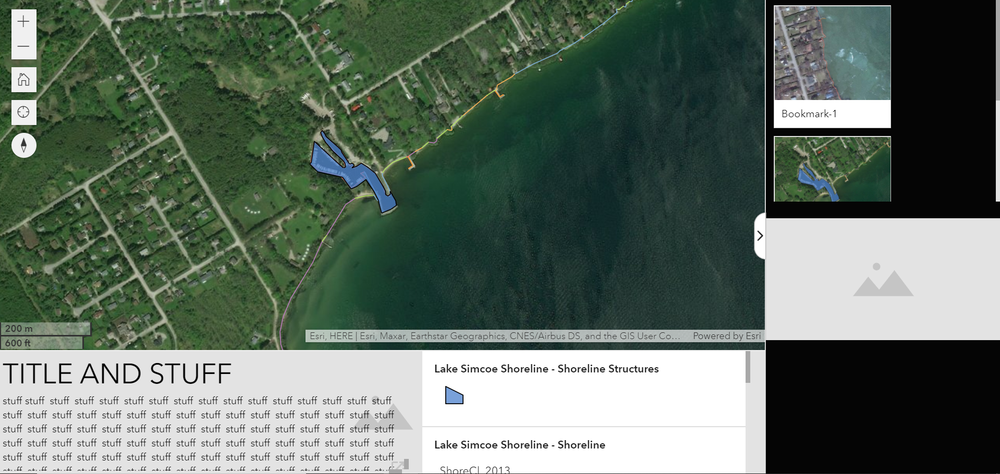Shane chose to build a custom layout for his rapid build. He modeled his after the Journey template that Sarah used, with some major alterations. This prototype was intended to experiment with the overall design of the app and the interactivity between widgets. The primary goal for this prototype was to contain the bookmarks in a scrollable box within a collapsible sidebar. When a bookmark was clicked, the intended behaviour was for the photo and text widgets below to change according to the selected bookmark. However, the Experience Builder is not capable of this without (possibly) custom enhancements. This design was abandoned for a more simple bookmark widget, as used within Sarah’s template.
Custom Template
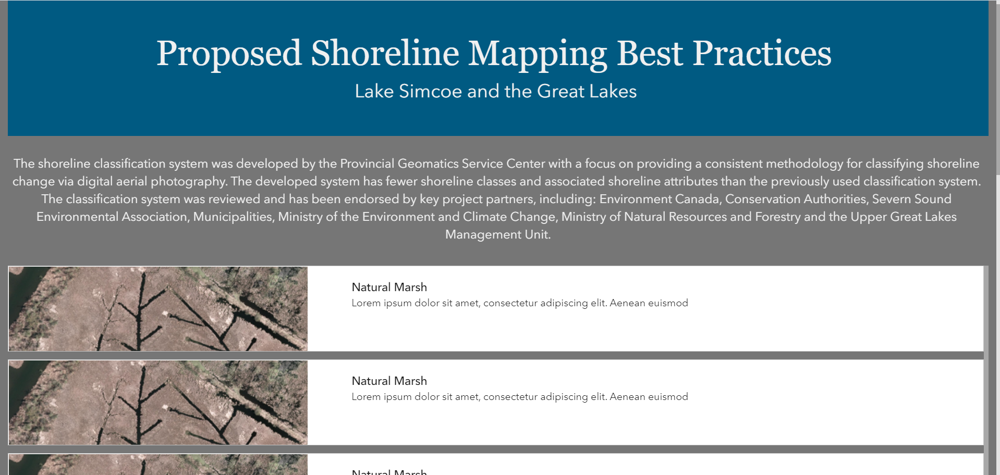 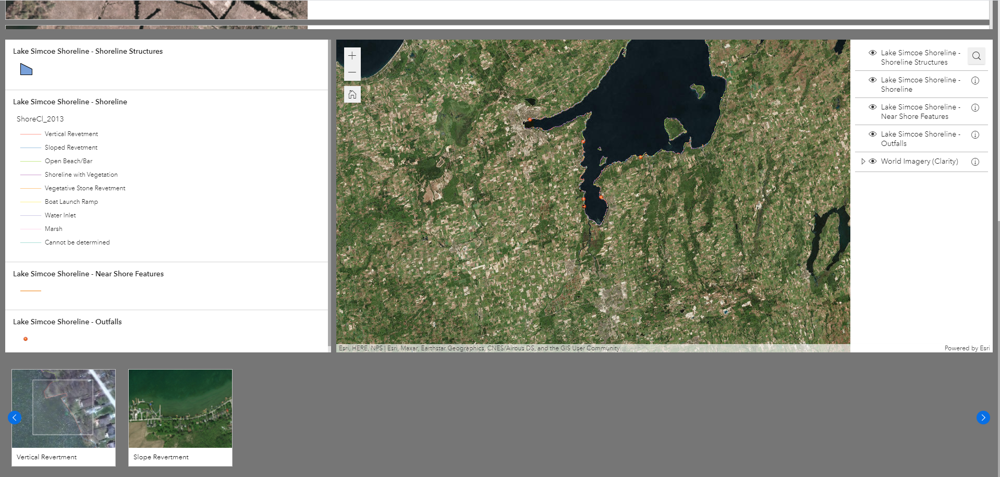Natalia based her Experience off of a more traditional website style. Her Experience walked users through definitions of shoreline alterations as they scrolled and introduced the map widget halfway down the page. She also used the bookmark tour idea in this scenario. One aspect of both custom builds was that they were not immediately functional on mobile, so when this Experience was viewed on the smaller screen options, it did not work very well and needed further revision of the widget placements.
Completing our own builds allowed us all to explore what Experience Builder had to offer, both positive and negative. The downside to starting with a blank layout was that it wasn't immediately set up for smaller screens. Both Shane and Natalia had issues with their layouts when the smaller screen sizes were selected. A downside to using Experience Builder was that there was limitations to what was possible as there was rigidity in the widget design. The Header widget was applied globally across the three screen sizes. The font size and icons used in the Desktop version applied to the Mobile version; while you could resize the icons you could not resize the text and if you deleted an icon, it would be deleted from all three version (e.g. the menu icon).
In the end, we decided that a layout modelled after the Journey template would be the best option, but that we would re-design it from a blank template. One aspect that we hadn't quite figured out was how to best instruct the user how to use the map and the Experience. We wanted a pop-up-like feature that would display when the Experience opened, but we discovered it would require custom programming. We also liked the increased ability to tell information like Natalia's version, but we were not sure how to integrate it.
Two Page Experience
We decided to combine the Teaching Text aspect of Natalia's build with Sarah's Bookmark Tour to make an Experience that had two pages. The first page would explain the background necessary to understand the data and the second page would house the map with the shoreline feature tour. Natalia produced two versions for us to compare.
Between the two options, we preferred the look and feel of the scrollable home page. We choice it because it would feel more familiar to users as it operated like a traditional website. A scrolling template seemed to be more intuitive and also required less engagement with the end-user. Clicking on cards to reveal information involves active viewership and we needed to encourage as much participation as possible. The scrolling screen is less involved and may encourage users to actually read the content as images and text would be immediately displayed.
In the end, however, we felt too constrained by Experience Builder's widgets and format. Shawn advised us to explore ArcGIS Hub in place of using a two page experience.
Fixed Home Page
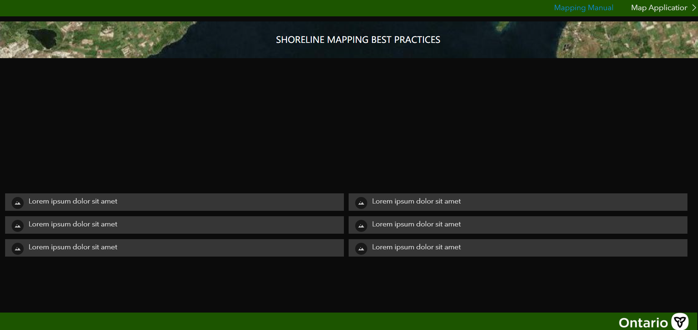 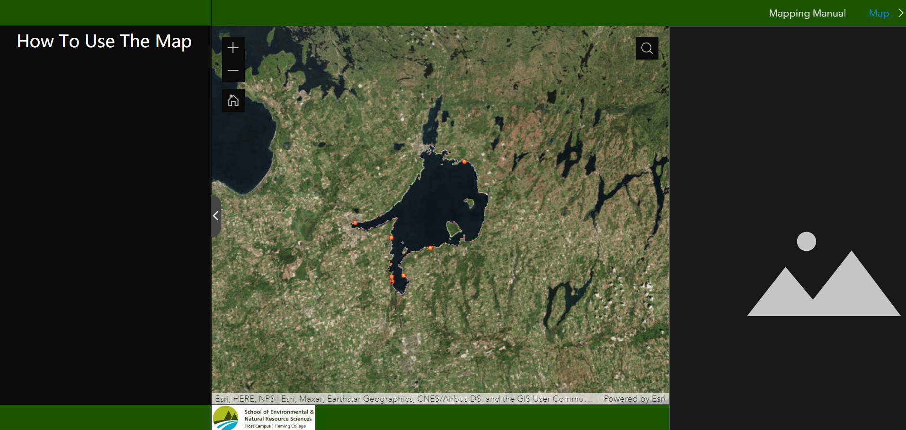This version used a fixed template that would provide information on shoreline alterations and their significance. This would be done by Cards that can be clicked to be expanded. On the second page, instructions would be placed in a collapsible side bar that would provide details on how to use the map.
Scrolling Home Page
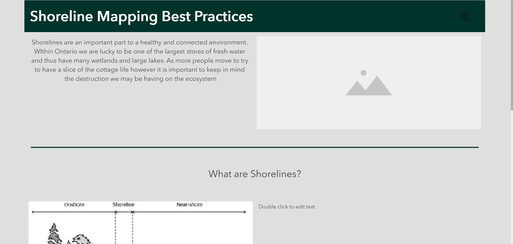 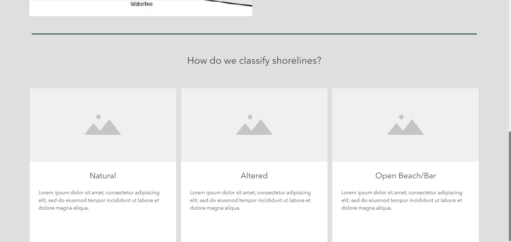This version used a scrolling template that would provide information on shoreline alterations and their significance in a more traditional format for a website. The second page in this version employed the Journey template version Sarah created but replicated from a custom blank template.
Enter: Hub
As we felt constrained with only using Experience Builder for our Solution, we moved to using ArcGIS Hub in conjunction with Experience Builder. ArcGIS Hub operates like a website but comes as a configurable app. Using Hub would allow us to put as much information as was necessary to educate the property owners without having to clutter one long scrolling page.
While exploring the functionality of Hub, Sarah created a number of Hubs using premade templates on her developer account. From the four contenders, we settled on the template Outdoor Recreation and created a colour palette that would suit the shoreline project better. When creating a Hub from a template, many ArcGIS Online items are created as well. While many of the additional items created to support the template would have been incredibly useful in community engagement efforts (such as the community events, statistics summaries, and surveys), we knew we didn't have the time or means to properly populate these features. In the future, however, these aspects would be a great benefit to a solution solving a similar problem.
Template to Solution
After cleaning up the Hub items, we removed the pre-made additional pages that the Hub template generated upon creation. To supplement the information that the Experience was going to tell, we needed to create additional features to display across our three pages.
Rather than reuse the web map that was being used in the Experience, a new web map was created that could tell the broader story on shoreline importance. We wanted to work from broad to specific, as one might with an introduction paragraph, moving from broad on the first page through to specific on the third where our Experience link was housed. The Experience was being used to show the results of the Lake Simcoe study while the Hub explained the significance of shorelines as well as what alterations are and why they are bad.
Experience V2 & V3
Experience Version 2
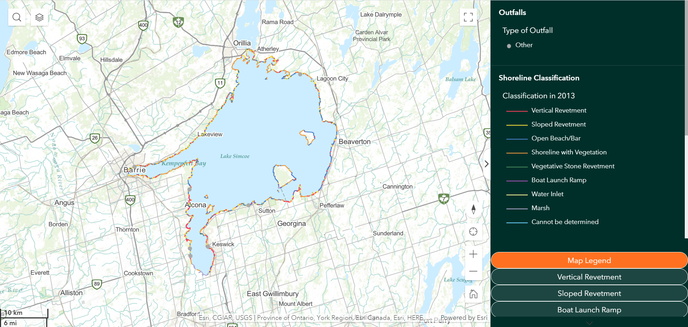 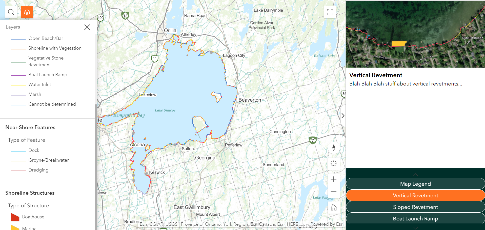The primary goal of Version 2 was to design a cleaner and simpler version of Sarah’s prototype based on the Journey template whilst implementing features from Shane’s prototype template (namely the sidebar). This version was designed around the navigation buttons at the bottom of the sidebar. The intent was to activate a new bookmark with each button (except for the Legend button, which opened the legend). However, this was beyond the basic functionality of the Experience Builder as activating a button would only make the bookmark appear, but not activate it. This version did, however, serve as an excellent template for Version 3 and the Version 4 (the finalized version).
Version 3 was refined from Version 2 with Experience Builder’s limitations in mind. The buttons now simply toggled between the legend and the bookmarks, with each bookmark being accessed and activated by clicking the ‘next’ arrow within the widget. Further adjustments and refinements were made to the Web Map, including better symbology and basemap switching from ESRI Topographic to ESRI World Imagery (Clarity) at 1:10,000 scale. Finally, the theme of the application was adjusted to match the colour palette of the ArcGIS Hub that had been built prior to this version. The main pitfalls of this version were its lack of tablet/mobile device support and minor issues with the buttons’ response to window size.
Experience Version 3
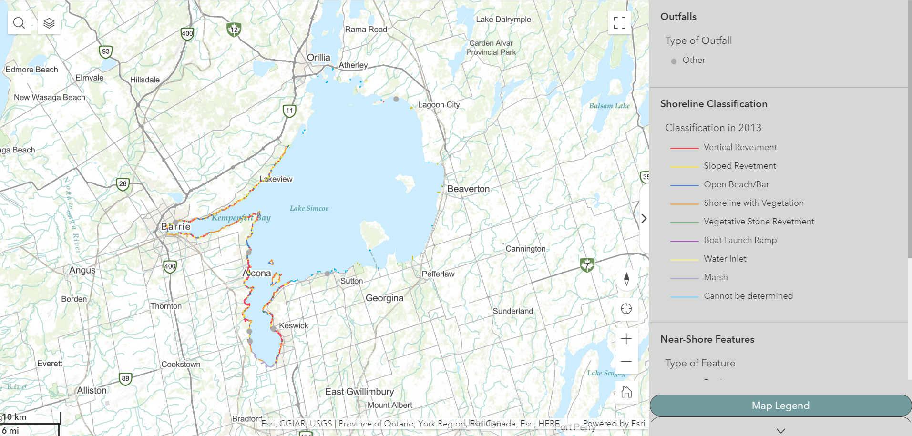 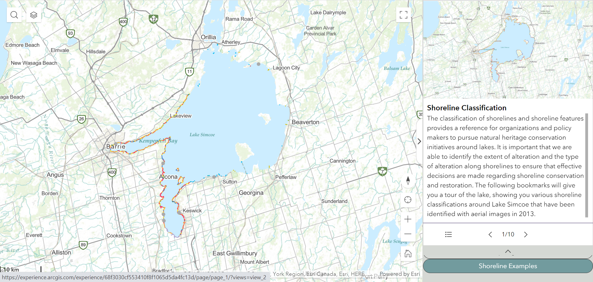 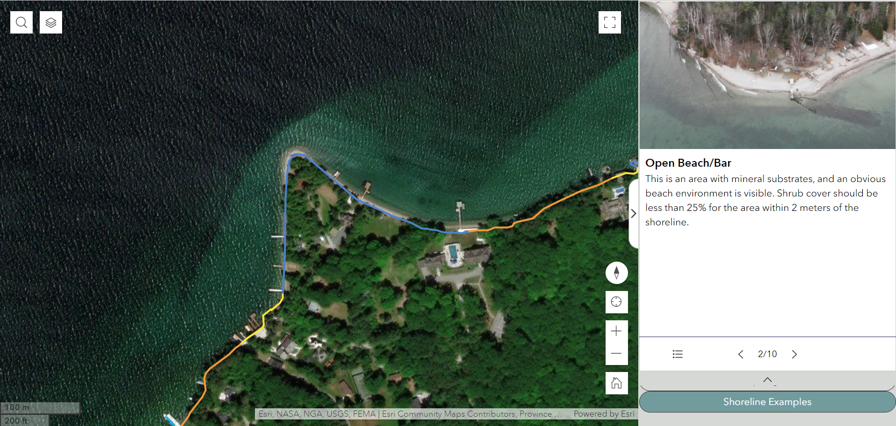